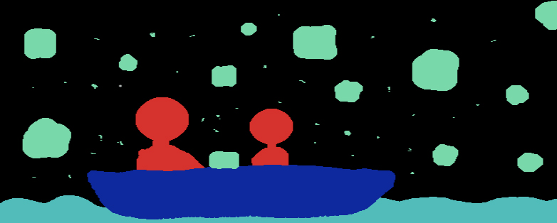
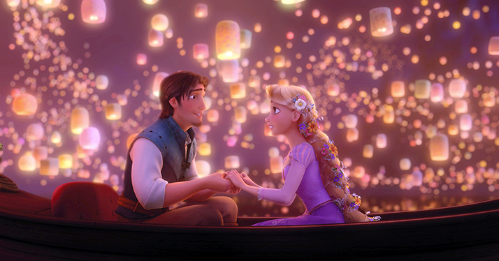

This art piece is a recreation of the floating lantern scene from the movie "Tangled" using Spade Coco which creates images using segmentation mapping. I used a Wacom tablet for more accurate lines and more defined figures. I decided to recreate this scene because it has always been a dream of mine to experience a floating lantern festival. I was curious about the accuracy of segmentation mapping and was successful in creating a new scene from a movie I was inspired by.
Movie Scene
